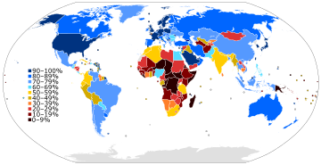
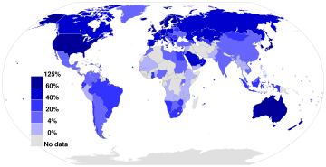
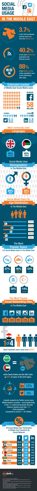
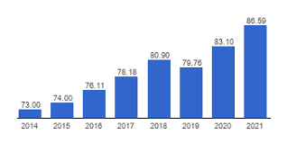
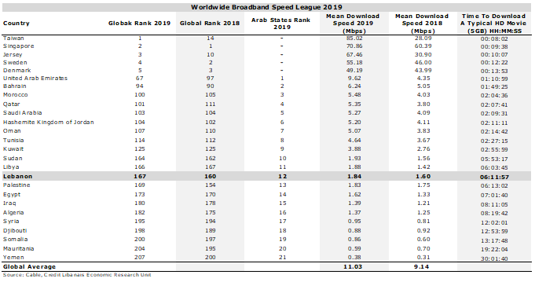

Middle East Internet Statistics and Trends
Table of Contents:
1. Internet Penetration and Usage
Regional Overview: Internet penetration in the Middle East ranges from 70% to 80%, with countries like the UAE, Qatar, and Saudi Arabia achieving rates above 90%.
Growth Trends: Rapid expansion in internet access is driven by infrastructure improvements and more affordable devices. Despite this, disparities between urban and rural areas persist.
Internet Penetration World Map:

2. Mobile Usage
Mobile Internet Dominance: Over 90% of internet users in the region access the web via mobile devices. The adoption of 5G technology in countries like the UAE and Saudi Arabia is enhancing mobile internet speeds and connectivity.
Mobile Broadband Internet Penetration World Map:

3. Social Media Engagement
High Engagement Rates: The Middle East boasts some of the highest social media engagement rates globally, with extensive use of platforms such as Facebook, Instagram, Twitter, TikTok, and LinkedIn. Social media usage is especially prevalent among younger demographics, shaping trends in marketing, communication, and entertainment.
Social Media Engagement in the middle-east:

4. E-Commerce and Digital Payments
Rapid Growth: E-commerce is expanding quickly, supported by increased internet and mobile usage. Digital payments and mobile wallets are gaining popularity, with a growing preference for cashless transactions.
5. Digital Infrastructure and Investments
Infrastructure Development: Significant investments are being made in digital infrastructure, including fiber-optic networks and data centers. Smart city projects integrating IoT and smart grids are also underway.
Lebanon Internet Statistics and Trends
1. Internet Penetration and Usage
Current Statistics: As of January 2023, Lebanon had 4.70 million internet users, representing 86.6% of the population. However, there was a slight decrease in users compared to the previous year.
Usage Patterns: Internet usage in Lebanon is influenced by economic factors and technological advancements, with a strong preference for mobile internet due to its accessibility.
lebanon internet users Statistics:

2. Mobile Usage
Mobile Internet Dominance: Mobile internet is predominant in Lebanon, with significant smartphone usage for online activities. The availability of 4G LTE services is improving connectivity, though challenges remain, particularly in rural areas.
3. Internet Speeds
Connection Speeds (2023):
- Mobile Internet: Median speed of 28.39 Mbps, reflecting a 33.3% increase from the previous year.
- Fixed Internet: Median speed of 7.27 Mbps, with a slight decrease of 5.2% over the same period.
lebanon ranks 167th in the worldwide Broadband speed:

4. Social Media and Digital Culture
Social Media Popularity: Social media is widely used for communication, news, and entertainment. Platforms like Facebook and Instagram are popular, with emerging platforms like TikTok gaining traction.
Digital Content Creation: Lebanon has a vibrant community of digital content creators, including influencers and bloggers.
5. E-Commerce and Digital Payments
Emerging Market: E-commerce is growing, with increasing online shopping and digital services. Digital payment systems, including online banking and mobile wallets, are being adopted, although cash remains common.
6. Digital Infrastructure and Challenges
Infrastructure Development: Efforts are being made to improve digital infrastructure, with ongoing challenges related to service quality and broadband coverage. Government and private sector initiatives are aimed at expanding broadband access and enhancing mobile network infrastructure.
7. Recent Developments and Future Outlook
Tech Startups and Innovation: Lebanon's tech startup ecosystem is growing, focusing on sectors like fintech, health tech, and e-commerce. There are also initiatives to improve digital literacy and skills among the population.